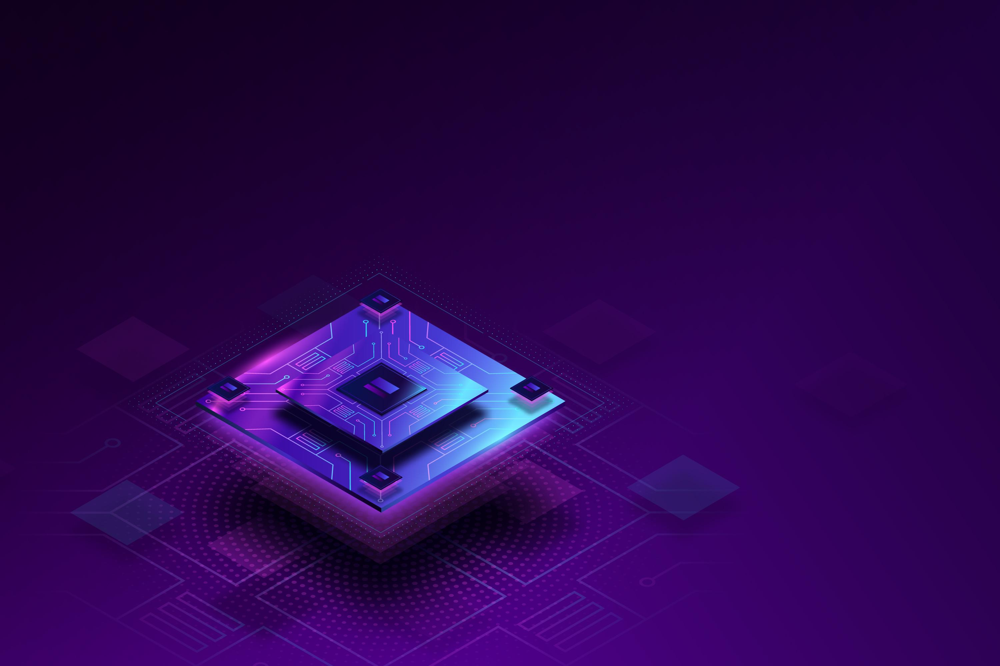

PAR
RACK
Montaje y configuración de rack de red: Instalación y organización de equipos de red en rack, realizando conexiones, cableado y configuración básica de la infraestructura.
Monitorización de infraestructura con Nagios: Implementación de un sistema de monitorización con Nagios para supervisar el estado y rendimiento de servicios y dispositivos de red.
Montaje y configuración de rack de red: Instalación y organización de equipos de red en rack, realizando conexiones, cableado y configuración básica de la infraestructura.

Ensamblaje y puesta en marcha de PC:Selección, montaje e instalación de componentes hardware para la creación y configuración completa de un ordenador funcional.